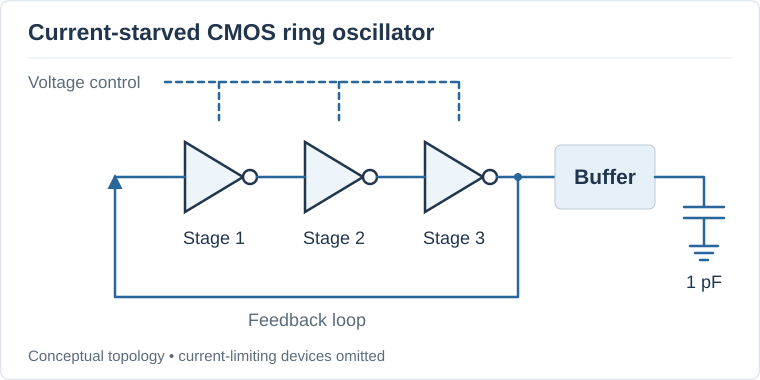
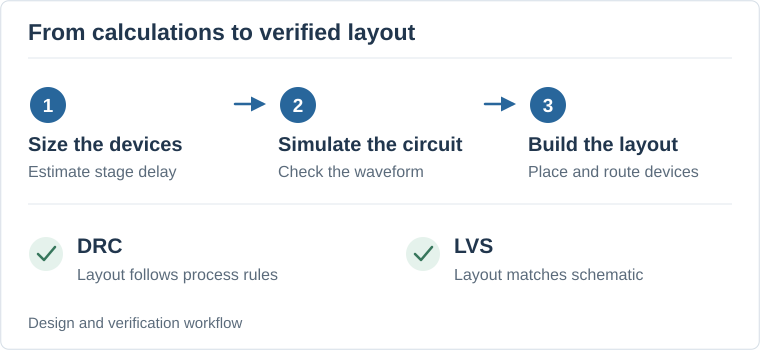

Project Overview
For my Silicon Jackets project, I designed a three-stage current-starved CMOS ring oscillator using Cadence Virtuoso. I wanted to learn more about integrated circuit design and understand how a schematic becomes a physical layout. The design targeted a frequency of 500 MHz with a 1.8 V supply and a buffer driving a 1 pF output load.
A ring oscillator connects an odd number of inverters in a loop. Each inverter takes a small amount of time to change its output. As the signal travels around the loop, the circuit keeps switching. In a current-starved design, extra transistors limit the current available to each stage. Changing the control voltage changes that current and adjusts the frequency.

What I Did
I started with hand calculations to estimate the delay needed at each stage. For a 500 MHz target and three stages, the average delay was about 333 picoseconds per stage. I then estimated the capacitance and used the process design kit parameters to choose starting transistor sizes.
One detail I had to account for was the load on the last stage. That stage drives both the next inverter in the loop and the input of the output buffer. The buffer then drives the external load. Keeping track of those connections helped me understand why the stages could behave differently even though they were part of the same ring.
After the calculations, I built and simulated the schematic in Cadence. I looked at the waveform and considered how the transistor sizes, current, and loading affected the circuit. I then completed the physical layout and checked it using DRC and LVS.

Results and What I Learned
The design passed DRC and LVS. DRC checks whether the layout follows the manufacturing rules, while LVS checks whether the layout matches the schematic. The 500 MHz value was the target I used when designing the circuit.
This was a useful introduction to the amount of checking involved in circuit design. Getting through the calculations was only one part of the project. I also had to think about how the circuit would be connected and laid out.
I also got practice explaining my design choices. Being able to say why I chose a certain size or what a check tells me is something I want to keep improving, especially as I explore consulting.
If I continued the project, I would compare the schematic simulation with a simulation that includes the layout's parasitic effects. I would also document the frequency at different control voltages. That would help me explain where the design worked well and what I would change next.